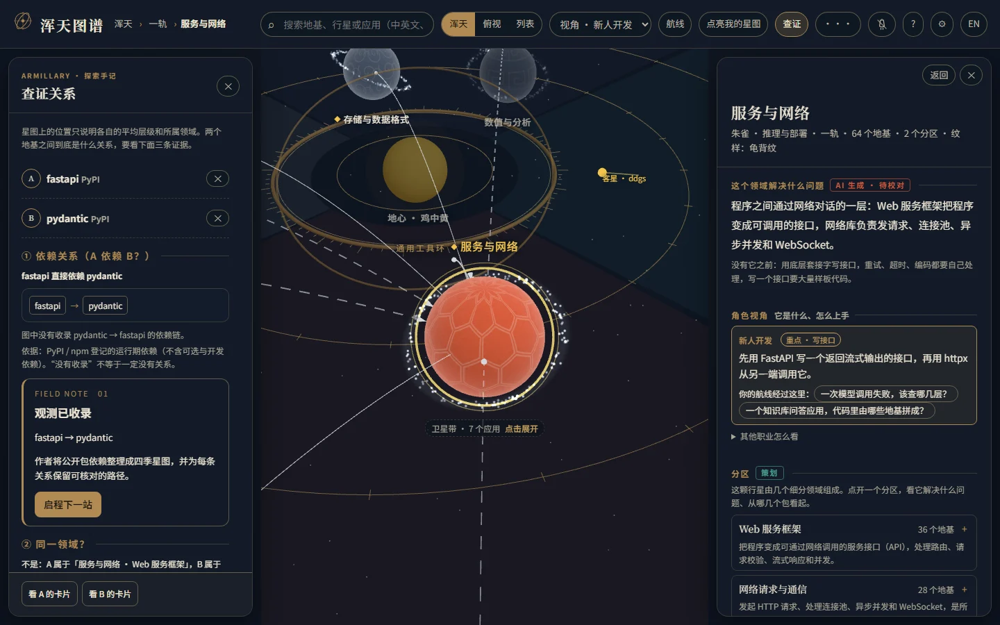

用领域组织知识，同时保留分类依据。
原方案想让共现聚类自动长出领域。实施时发现，互为替代的推理工具很少同时出现，互补的小库却会聚在一起。最终以策划锚点定义领域，再做关系传播与结构校验；聚类结果保留为独立对照。
更容易按能力理解；代价是承认策划介入，并持续校对边缘成员。
记录依据 · 实施记录 §二.1，AI 实施中的方案调整
从一座星系进入一个领域，沿着真实依赖，读懂手上的 AI 项目。
GitHub 的项目名和 Star 数能引起兴趣，却很难回答另一个问题：一个 AI 应用由哪些组件构成，它们各自解决什么问题，遇到故障应该沿哪条关系继续查？
《浑天图谱》把公开依赖数据组织成一座可以探索的星系。四季与四象帮助记住领域方位，具体包之间的关系则回到可核对的依赖路径。面向不同背景的新人，提供职业视角、任务航线与读懂自己项目的入口。

圈层表示代表包平均接近依赖底层的程度。两颗行星一内一外，不足以判断其中一个包依赖另一个。
实施记录明确记载了发起人的两轮反馈：把拥挤的行星合并为更容易辨认的大领域，再让四季扇区顺着 AI 生命周期排列；职业视角和引导也随试玩意见调整。
分类计算、代码实现和讲解内容由 AI 协作推进。关系语义、导入回执和任务航线的修正来自产品审阅；本案例按记录呈现这些共同形成的判断，不把每一项实现都归为个人独立完成。
第六轮进一步提供两站观测任务：先抵达相关行星，再读路径、回答关系类型、收藏结果，回来后继续下一站。它给自由漫游增加了一个明确的开始与收尾。
原方案想让共现聚类自动长出领域。实施时发现，互为替代的推理工具很少同时出现，互补的小库却会聚在一起。最终以策划锚点定义领域，再做关系传播与结构校验；聚类结果保留为独立对照。
记录依据 · 实施记录 §二.1，AI 实施中的方案调整
发起人反馈后，总览从 30 颗行星合并为 13 颗，原细分领域收入行星内的分区。高星应用收进卫星带；职业透镜提示当前角色先看哪里。
记录依据 · 实施记录 §五、§六，明确记录发起人反馈
只点亮图中存在的包，会让人以为没显示的组件不存在。回执因此列出读取文件、直接依赖的匹配类别、间接地基与无法判断的部分。遇到专用客户端时给出外部引擎线索，通用兼容接口不直接推断引擎。
记录依据 · 资深产品经理审阅、实施记录 §四.2
“覆盖了多少常见依赖”不能直接说明新人学会了什么。航线改为从任务问题倒推每一站；最新观测任务要求读路径并区分直接与间接依赖，答错能重试，答对保存路径。
记录依据 · 实施记录 §四.3、第六轮试玩交付记录
下面三组关系直接取自原项目随站依赖图。选择一组，查看结论及其依据。这里是作品集内的固定快照演示。
快照中收录了直接依赖。下方截图展示原产品的查证界面。
数据生成于 2026-11-03，2026-11-04 只读核对。仅反映图中登记的运行期依赖。

本地版本已把首次进入和再次访问连起来，独立网站入口按当前计划预留。
以上为 2026-11-03 数据快照，11-04 直接读取核对。收录规模只描述这份图的数据范围。
它与学习回路可以通过导出的学习素材衔接：这里负责发现与理解结构，题库负责后续练习。两个项目通过文件交换，保持独立。